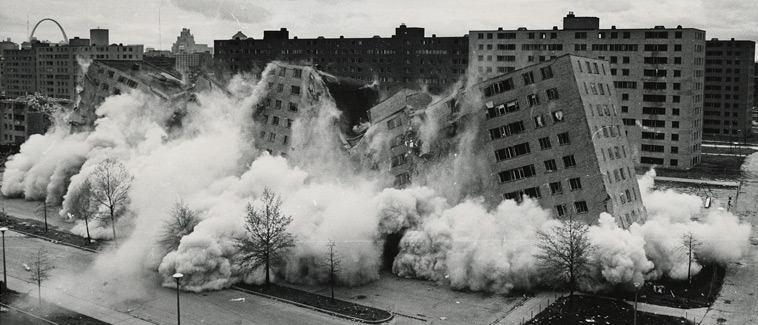
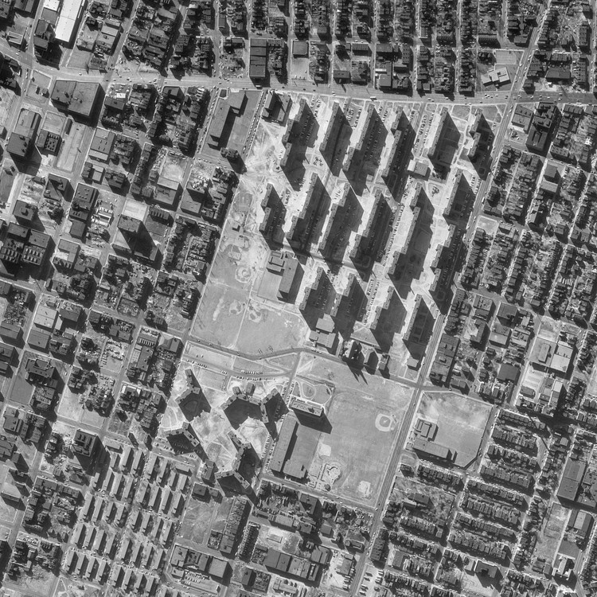

This page explores the ways in which architecture has directly and indirectly caused harm to people and communities, specifically through the lens of affordable housing.
~ CASE STUDY ~

Demolition of Pruitt-Igoe

Aerial View of Pruitt-Igoe - St. Louis, Missouri
The overall notion of the building itself reflects many ethical issues within the practice of architecture, the politics behind housing projects, and how society governs our bodies. The concept that modernity is equal to being humane poses many harmful stereotypes onto those who may not live in a “modern” way. It is also linked to how the government has policed those who were living in Pruitt-Igoe. These two ideas point to one of the main problems within housing projects as its designers are often projecting a way of life onto people who live their lives in a completely different way. Those who design these spaces often do not have a true understanding of what its inhabitants desire and care about. It also reflects back to the disciplinary alibi and the selfishness of architecture that Ward and Roth have both cited.